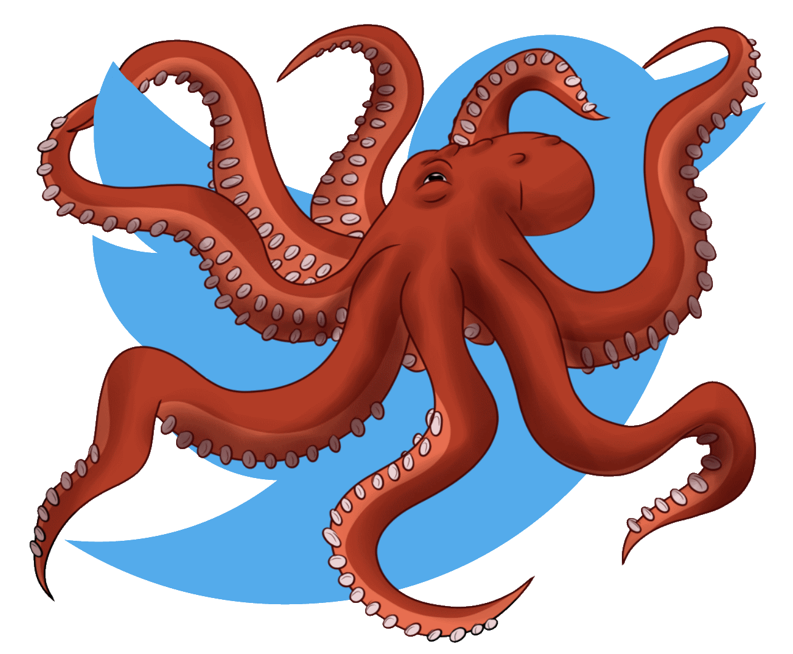

Menu
 Tako
Tako (Dev.) V00.00.02
Dashboard
Close Menu
Overview
Control
Logging
Settings
Scheduler
Stream
Diagnostics
My Actions
0
Likes
0
Retweets
0
Requests
0%
Efficiency
Websocket Log
Status
Server:
NOT RUNNING
Server Ping:
N/A
Query Bot:
NOT RUNNING
Stream Bot:
NOT RUNNING
Analytics - Performance
Analytics - Interaction
Analytics - Usage
Diagnostics & Info
Memory
jsHeapSizeLimit:
totalJSHeapSize:
usedJSHeapSize:
Events
eventCounts.size:
Navigation
navigation.type:
navigation.redirectCounts:
Timing
Time Init:
Time Now:
Elapsed:
Error Logs:
Edit Resources
Select A Resource To Edit
Hashtags
Drop Interaction If Hashtag Includes
Drop Interaction If Tweet Includes
Edit Constraints
Max Dataset Length
?
Set
Sleep Time (Seconds)
?
Set
Required Retweets
?
Set
Required Likes
?
Set
Tweets Per Query
?
Set
Max Hashtags
?
Set
Autonomous Interactions
Like
Retweet
Query Bot Control
Start
Restart
Stop
Stream Bot Control
Start
Restart
Stop
Universal Bot Settings
Resources
Constraints
Autonomy
Universal API Settings
Reset Auth
Settings
Darkmode
Currently Following Handles:
Set